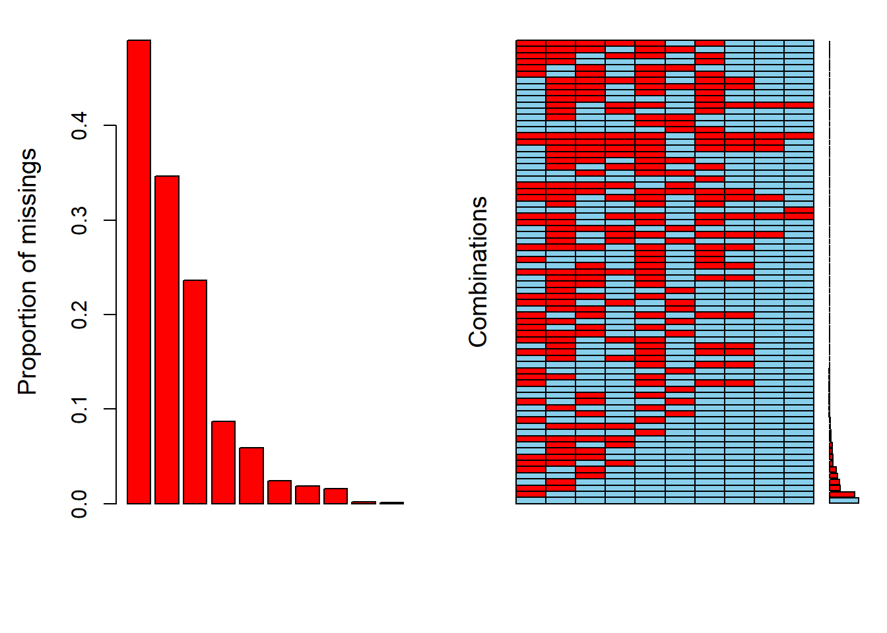

HELOC Data Cleaning
Jim Coen
Friday, January 28, 2022
Last updated: 2022-01-28
Checks: 6 1
Knit directory: Interpretable-ML-Models/
This reproducible R Markdown analysis was created with workflowr (version 1.7.0). The Checks tab describes the reproducibility checks that were applied when the results were created. The Past versions tab lists the development history.
The R Markdown is untracked by Git. To know which version of the R Markdown file created these results, you’ll want to first commit it to the Git repo. If you’re still working on the analysis, you can ignore this warning. When you’re finished, you can run wflow_publish to commit the R Markdown file and build the HTML.
Great job! The global environment was empty. Objects defined in the global environment can affect the analysis in your R Markdown file in unknown ways. For reproduciblity it’s best to always run the code in an empty environment.
The command set.seed(20220121) was run prior to running the code in the R Markdown file. Setting a seed ensures that any results that rely on randomness, e.g. subsampling or permutations, are reproducible.
Great job! Recording the operating system, R version, and package versions is critical for reproducibility.
Nice! There were no cached chunks for this analysis, so you can be confident that you successfully produced the results during this run.
Great job! Using relative paths to the files within your workflowr project makes it easier to run your code on other machines.
Great! You are using Git for version control. Tracking code development and connecting the code version to the results is critical for reproducibility.
The results in this page were generated with repository version 8c96ca5. See the Past versions tab to see a history of the changes made to the R Markdown and HTML files.
Note that you need to be careful to ensure that all relevant files for the analysis have been committed to Git prior to generating the results (you can use wflow_publish or wflow_git_commit). workflowr only checks the R Markdown file, but you know if there are other scripts or data files that it depends on. Below is the status of the Git repository when the results were generated:
Ignored files:
Ignored: .Rhistory
Ignored: .Rproj.user/
Ignored: analysis/.Rhistory
Untracked files:
Untracked: analysis/HELOC-data-cleaning.Rmd
Untracked: analysis/HELOC-data-dictionary.Rmd
Untracked: analysis/Harvard.csl
Untracked: analysis/Purpose.Rmd
Untracked: analysis/style.css
Untracked: data/heloc_data_dictionary-2.xlsx
Untracked: data/heloc_dataset_v1.csv
Unstaged changes:
Modified: analysis/_site.yml
Deleted: analysis/about.Rmd
Note that any generated files, e.g. HTML, png, CSS, etc., are not included in this status report because it is ok for generated content to have uncommitted changes.
There are no past versions. Publish this analysis with wflow_publish() to start tracking its development.
heloc <- read.csv("./data/heloc_dataset_v1.csv")
setDT(heloc)Missing Values
Missing values may be ignored by taking complete cases only or they may be replaced with an incorrect value. However, this can lead to unstable model operation or biased predictions.
In the HELOC dataset, a negative numeric indicates a missing value. Reasons for this are:
A credit report for an applicant was not found or not investigated. In this case, all features receive a value of -9.
Information in the credit report on a particular feature was considered “not usable” and that feature receives a value of -8.
In the case where there is “no information of that type”, the feature receives a value of -7. This occurs in the features
MSinceMostRecentDelqandMSinceMostRecentInqexcl7days.
When there is no credit report for all observations in a loan applications (all the feature variables are -9), they provide no information and need to be removed.
features <- subset (heloc, select = -RiskPerformance)
has.neg <- apply(features, 1, function(row) all(row < 0))
which(has.neg) %>%
length()[1] 588heloc <- heloc[!has.neg,]
rm(has.neg)588 rows, that contained -9 in all features, were removed.
Features containing missing values
has.neg8 <- apply(features, 1, function(row) any(row == -8))
num_neg8 <- which(has.neg8) %>%
length()
cat("There are", num_neg8, "observations that have at least one feature with an entry of -8.\n and\n")There are 4226 observations that have at least one feature with an entry of -8.
andhas.neg7 <- apply(features, 1, function(row) any(row == -7))
num_neg7 <- which(has.neg7) %>%
length()
cat("there are", num_neg7, "observations that have at least one feature with an entry of -7.")there are 5687 observations that have at least one feature with an entry of -7.# cleanup
rm("has.neg7", "has.neg8", "num_neg7", "num_neg8")In effect, these entries are missing values and it is better to encode them as “NA”.
Factor Variables
As described in the data dictionary, the two factor variables and their levels are:
| MaxDelq2PublicRecLast12M | MaxDelqEver |
|---|---|
| 0 - derogatory comment | 1 - No such value |
| 1 - 120+ days delinquent | 2 - derogatory comment |
| 2 - 90 days delinquent | 3 - 120+ days delinquent |
| 3 - 60 days delinquent | 4 - 90 days delinquent |
| 4 - 30 days delinquent | 5 - 60 days delinquent |
| 5,6 - unknown delinquency | 6 - 30 days delinquent |
| 7 - current and never delinquent | 7 - unknown delinquency |
| 8, 9 - all other | 8 - current and never delinquent |
| 9 - all other |
For the two factor variables above, entries with “derogatory comment” and “No such value” are equivalent to missing values and need to be recorded as such.
# Encode missing values as 'NA'
heloc[ heloc < 0] <- NA
# "derogatory comment"
heloc[MaxDelq2PublicRecLast12M == 0, MaxDelq2PublicRecLast12M := NA]
heloc[MaxDelqEver == 2, MaxDelqEver := NA]
# "No such Value"
heloc[MaxDelqEver == 1, MaxDelqEver := NA]Convert MaxDelq2PublicRecLast12M and MaxDelqEver from numeric to factor data type.
# features <- subset (heloc, select = -RiskPerformance)
change_columns <- c("MaxDelq2PublicRecLast12M", "MaxDelqEver")
# Change class of certain columns
heloc[ , (change_columns) := lapply(.SD, as.factor),
.SDcols = change_columns]
# record the counts of missing values in each column
missing_counts <- heloc %>%
is.na() %>%
colSums() %>%
sort(decreasing = TRUE)
# features with missing values
missing_counts[missing_counts > 0] %>%
kable()| x | |
|---|---|
| MSinceMostRecentDelq | 4840 |
| NetFractionInstallBurden | 3419 |
| MSinceMostRecentInqexcl7days | 2331 |
| NumInstallTradesWBalance | 861 |
| MaxDelqEver | 739 |
| NumBank2NatlTradesWHighUtilization | 583 |
| MaxDelq2PublicRecLast12M | 336 |
| MSinceOldestTradeOpen | 239 |
| NetFractionRevolvingBurden | 186 |
| NumRevolvingTradesWBalance | 156 |
| PercentTradesWBalance | 18 |
| ExternalRiskEstimate | 10 |
# record features with missing values
miss <- names(missing_counts[missing_counts > 0])
heloc_miss <- heloc[, ..miss]Given the large proportion of missing values, dealing with them appropriately is a critical aspect of the overall analysis of the HELOC dataset.
The majority of missing values are in the variables
MSinceMostRecentDelq, MSinceMostRecentInqexcl7days, NetFractionInstallBurden, and NumInstallTradesWBalance
Recognizing missing data mechanisms
In order to formulate a strategy to deal with missing values, it is important to identify the reasons why a variable has a missing entry.
If the reason for missingness is purely random, it’s MCAR.
This is generally due to poor test design, absence of output from a faulty sensor, or failure to record the value of a feature. Missing values could potentially occur across all instances / rows in a dataset. Removing such missing values will not introduce bias in subsequent analysis. However, other features for a specific observation are likely to contain relevant information.If the reason for missingness can be explained by another variable, it’s MAR.
In this case, the missing values occur relative to the observed data but they are not related to the specific missing value itself. They are found within a subset to the observed data. For instance, in a certain location the county council has not registered new builds and so, no address is recorded for them.If the reason for missingness depends on the missing value itself, it’s MNAR.
For example, those with high income tend not to record a value for their income. The missing data is simply unknown and cannot be estimated from other observations. Because there are reasons within the data for the occurrence of missing values, removing them would lead to bias. There needs to be a method of estimation that minimises bias.The missing value may depend on a predictor that has not been recorded. For instance, people with prior infection are unlikely record if they took an experimental inoculation or not. But the dataset does not record prior infection.
To determine whether a variable is MCAR or MAR, it is necessary to check if missing values on one variable are related to missing values on another variable.
Visualizing Missing Values
An aggregation plot displays features in columns and sections each into missing (red cells) and valid entries (blue cells). Limiting the plot to the top four features with missing values facilitates inspection of relationships.
Columns in the plot below represent the features MSinceMostRecentDelq, NetFractionInstallBurden, MSinceMostRecentInqexcl7days, and NumInstallTradesWBalance in that order.
# Draw an aggregation plot of HELOC variables with missing values
heloc_miss[, c("MSinceMostRecentDelq", "NetFractionInstallBurden", "MSinceMostRecentInqexcl7days", "NumInstallTradesWBalance")] %>%
aggr(combined = TRUE, numbers = TRUE,
cex.axis=.7,cex.numbers=0.7)
- 27% of
MSinceMostRecentDelqentries are not related to other variables (MCAR). - 10% of
NetFractionInstallBurdenand 7.7% ofMSinceMostRecentInqexcl7daysare also MCAR. - 10% of observations have missing entries in both
MSinceMostRecentDelqandNetFractionInstallBurden. - 7% of observations have missing entries in both
MSinceMostRecentDelqandMSinceMostRecentInqexcl7days.
Correlation between variables with missing values, ranked by r value.
# devtools::install_github("laresbernardo/lares")
library(lares)
# Create dataframe, derived from heloc, where '1' indicates a missing value
x <- as.data.frame(abs(is.na(heloc_miss)))
corr_cross(x, # name of dataset
max_pvalue = 0.05, # display only significant correlations (at 5% level)
top = 10 # display top 10 couples of variables (by correlation coefficient)
)Returning only the top 10. You may override with the 'top' argumentWarning in .font_global(font, quiet = FALSE): Font 'Arial Narrow' is not
installed, has other name, or can't be found
NetFractionRevolvingBurden and NumRevolvingTradesWBalance have highest correlation for missing values. This is most likely due to absence of data on the revolving balance. However, for both these features, the number of missing values is relatively low (<200). Given the low correlation between missing entries in pairs of features, it is possible that some features could be classified as Missing Completely at Random.
All Features with Missing Entries
In the matrixplot below, missing values have a red colour. Observed values are recorded in a gray scale, with low values having a light grey while higher values are darker.
# identify features that have missing values
miss_cols <- names(missing_counts[missing_counts > 0])
# Explore missing values
heloc_miss <- (heloc[, miss_cols, with = FALSE])
library("VIM")
matrixplot(heloc_miss)
This plot indicates that most of the missing entries occur in combination with other features. So they are unlikely to be MCAR.
Strategy for Dealing with Missing Values
Donor-based imputation, such as mean/median substitution or K nearest neighbours, is appropriate when the variable of concern has a normal distribution and missingness is MCAR. However, such methods may introduce bias in the estimates themselves and with subsequent models.
In the HELOC dataset, there is a high number of missing values (about 50% of observations in the MSinceMostRecentDelq variable). In addition, missing values occur in 12 out of the 23 features. Given the exploratory analysis above, it is not appropriate to assume that any of these are MCAR and donor-based imputation cannot be applied.
Unfortunately, it is not possible to ascertain whether data is missing at random, missing due to unobserved predictors, or due to the missing value itself (Gelman and Hill, 2006). A practical response to this problem is to create a model of the missing data that includes as many predictors as possible .
Model-based Imputation
Model-based imputation creates a statistical or machine learning model for each variable with missing entries. In effect, these models estimate an imputation value as a function of the values of all the other variables in the dataset. Statistical methods can be used when relationship between variables is known. The Machine Learning (ML) approach makes no assumptions about the underlying relationships. So this approach has particular advantages:
- It is not necessary to specify relationships between variables since the ML model can “learn” this from the data itself by means of induction.
- It is capable of capturing complex non-linear patterns in the data.
Imputation Methods
Researchers at the University of Michigan carried out a comparison of four imputation methods when dealing with missing laboratory data (Waljee et al., 2013). The methods studied were:
missForest;
mean imputation;
nearestneighbour imputation;
and multivariate imputation by chained equations (MICE).
Two ML models had been fit apriori to the data with no missing values. Evaluation of imputation results occurred following multiple schemes:
- A proportion of the test data was randomly assigned as “NA” to simulate data missing completely at random (MCAR). This test data was imputed with the four methods and compared to the valid test data.
- The imputed test data was used to make predictions using the apriori models and compared to predictions made with the valid test data.
- To take account for differences in feature importance, the frequency of missing values across features in the test data was varied. Following this, steps 1 and 2 repeated.
When dealing with both continuous and categorical data in two separate datasets, the missForest algorithm had the least imputation error. Also, it had the smallest prediction difference when models used imputed and valid (original) values.
missForest algorithm for imputation
The missForest algorithm creates a Random Forest model to predict missing values for each variable. This is an iterative approach that makes initial estimates of missing values and updates these with a random forest model until reaching convergence:
- For each variable x
\(\quad\) Impute initial value with mean substitution- Sort variables by number of missing values, in ascending order
- Repeat until imputed values converge
\(\quad\)For each variable x
\(\quad\) \(\quad\)Fit a random forest model to the observed values of x using all other variables as predictors
\(\quad\) \(\quad\)Use model to predict missing values of x
Finally, it is possible to extract the “filled-in” values and estimate imputation error.
This algorithm is based on a random forest model. It uses predictive mean matching to calculate the predicted mean for each observation. It then imputes using the observed value for the instance with the predicted mean that is the closest match to the missing instance.
Functionality unique to mi includes:
- detection of high collinearity
- adding noise to the prediction process do handle additive constraints between variables.
- dealing with semi-continuous data.
# library(mi)
# mi.info(heloc)
# mi.References
sessionInfo()R version 4.1.2 (2021-11-01)
Platform: x86_64-w64-mingw32/x64 (64-bit)
Running under: Windows 10 x64 (build 22000)
Matrix products: default
locale:
[1] LC_COLLATE=English_United States.1252
[2] LC_CTYPE=English_United States.1252
[3] LC_MONETARY=English_United States.1252
[4] LC_NUMERIC=C
[5] LC_TIME=English_United States.1252
attached base packages:
[1] grid stats graphics grDevices utils datasets methods
[8] base
other attached packages:
[1] lares_5.0.5 VIM_6.1.1 colorspace_2.0-2 kableExtra_1.3.4
[5] data.table_1.14.2 purrr_0.3.4 dplyr_1.0.7 ggplot2_3.3.5
loaded via a namespace (and not attached):
[1] httr_1.4.2 tidyr_1.1.4 sass_0.4.0 jsonlite_1.7.3
[5] viridisLite_0.4.0 carData_3.0-5 bslib_0.3.1 assertthat_0.2.1
[9] sp_1.4-6 highr_0.9 yaml_2.2.1 robustbase_0.93-9
[13] pillar_1.6.4 lattice_0.20-45 glue_1.5.1 pROC_1.18.0
[17] digest_0.6.29 promises_1.2.0.1 rvest_1.0.2 plyr_1.8.6
[21] htmltools_0.5.2 httpuv_1.6.5 Matrix_1.4-0 pkgconfig_2.0.3
[25] patchwork_1.1.1 scales_1.1.1 webshot_0.5.2 ranger_0.13.1
[29] svglite_2.0.0 openxlsx_4.2.5 later_1.3.0 git2r_0.29.0
[33] tibble_3.1.6 proxy_0.4-26 farver_2.1.0 generics_0.1.1
[37] car_3.0-12 ellipsis_0.3.2 withr_2.4.3 nnet_7.3-17
[41] magrittr_2.0.1 crayon_1.4.2 evaluate_0.14 laeken_0.5.2
[45] fs_1.5.1 fansi_1.0.2 MASS_7.3-55 xml2_1.3.3
[49] class_7.3-20 tools_4.1.2 lifecycle_1.0.1 rpart.plot_3.1.0
[53] stringr_1.4.0 munsell_0.5.0 zip_2.2.0 compiler_4.1.2
[57] jquerylib_0.1.4 e1071_1.7-9 vcd_1.4-9 systemfonts_1.0.3
[61] rlang_0.4.12 RCurl_1.98-1.5 rstudioapi_0.13 labeling_0.4.2
[65] bitops_1.0-7 rmarkdown_2.11 boot_1.3-28 gtable_0.3.0
[69] abind_1.4-5 DBI_1.1.2 R6_2.5.1 zoo_1.8-9
[73] lubridate_1.8.0 knitr_1.37 fastmap_1.1.0 utf8_1.2.2
[77] workflowr_1.7.0 rprojroot_2.0.2 h2o_3.36.0.1 stringi_1.7.6
[81] Rcpp_1.0.7 rpart_4.1-15 vctrs_0.3.8 DEoptimR_1.0-10
[85] tidyselect_1.1.1 xfun_0.28 lmtest_0.9-39